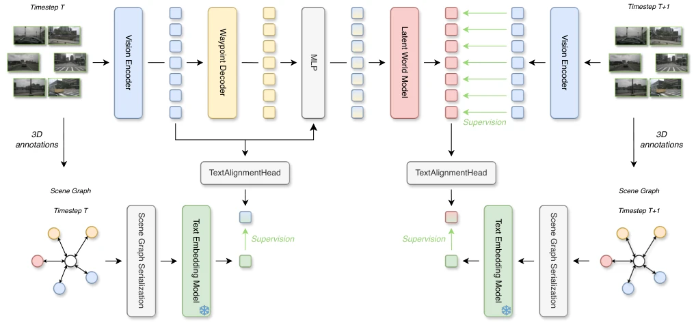

This paper administers a "semantic adrenaline shot" to autonomous driving world models, but it is permitted only during training; during inference, it must pretend to be oblivious. The authors cleverly utilize existing 3D annotations to convert scene graphs into text, forcibly aligning visual latent variables with such "structured relationships", resulting in the collision rate being directly halved; this effect is much stronger than simply inserting a language model. However, although this "cheating during training, hiding during inference" operation saves resources, it also exposes potential risks: if the visual features during inference have not truly learned the relationships in the graph, but only memorized the superficial text, will it collapse when encountering complex interactions unseen in the training set? Additionally, relying on text serialization of graph structures inherently loses information; in the future, if graph neural networks can be used directly, performance could likely be squeezed out further. Overall, this is a low-cost, high-return "concept substitution" style optimization; although it did not change the model architecture, it made the latent variables better understand "social nuances".
Existing end-to-end autonomous driving methods, such as UniAD [1] and VADv2 [2], although fusing perception and planning, often lack deep understanding of explicit interaction relationships between traffic participants. Although methods like GraphWorld [24] and GraphPilot [25] introduce scene graphs, they typically embed graph structures into the model or use them only for language reasoning, failing to solve the problem of implicit retention of relationship semantics in predictive world models. Latent world models like LAW [12] can predict future visual states, but their latent variables are mainly constrained by trajectory and geometric priors, lacking explicit supervision for key interaction relationships like "who is next to whom" or "who is in front of whom". This absence leads to models easily generating collisions in complex interaction scenarios (such as yielding, game-theoretic interactions). This paper aims to verify: whether 3D annotations available during the training phase can be used to construct scene graphs, using them as "privileged semantic supervision" to explicitly guide latent world models to learn more robust relationship structures without increasing inference costs?
This method is based on the LAW [12] architecture; the core innovation lies in introducing a "training-only" relationship alignment mechanism. The overall process is divided into three stages: data construction, semantic encoding, and latent variable alignment. First, an Actor-Only scene graph centered on participants is constructed using nuScenes 3D annotations, where nodes represent vehicles, pedestrians, etc., while edges represent relative direction and distance relationships. Next, the graph structure is serialized into text sentences of "subject-relation-object", encoded into fixed semantic vectors via a frozen Qwen3-Embedding model [27]. Meanwhile, LAW's visual encoder extracts latent variables from multi-view images, performing mean pooling and MLP projection through a learnable Alignment Head, mapping them to the same semantic space. During training, the cosine distance loss (Cosine Alignment Loss) between visual latent variables and scene graph semantic vectors is calculated, forcing visual features to learn the relationship structure in the graph. Additionally, an optional temporal alignment branch is introduced, aligning predicted future latent variables with scene graph semantics at time t+1. During the inference stage, all scene graph construction, text encoding, and alignment heads are removed; the model completely returns to LAW's original architecture, requiring no additional computation.

Fig. 2. Overview of our relationally grounded latent world model. The upper branch shows the original LAW [12] pipeline, which extracts visual latents from multi-view images, predicts ego waypoints, constructs action-aware latents, and predicts future visual latents. During training, we construct traffic scene graphs from the corresponding 3D annotations, serialize them, and encode them using a frozen text embedding model. We pool the visual latents at time t, project them into the semantic embedding space, and align them with the scene-graph embedding via cosine similarity. The right-hand auxiliary branch shows our optional temporal extension, which analogously aligns the predicted future latents with the semantic representation of the scene graph at t + 1. The scene-graph, text-embedding
On the nuScenes planning benchmark, the authors re-trained the LAW baseline for comparison. Results show that after introducing structured scene graph supervision, the average trajectory L2 error dropped from 0.661 to 0.622 (a 5.9% reduction), and the collision rate dropped significantly from 0.456 to 0.217 (a 52.4% reduction). Compared to variants using unstructured text descriptions (Caption-style), structured graph supervision reduced L2 error by an additional 7.2% and collision rate by 30.4%, proving the importance of explicit relationship structures. Ablation studies indicate that the current state alignment weight (λSG) is optimal at 0.1; weights that are too large instead lead to performance degradation; temporal alignment (λtemp), while able to further improve trajectory accuracy, contributes limitedly to reducing collision rates and requires fine-tuning. This confirms that the improvement in safety from relationship supervision mainly stems from accurate modeling of current interaction states.